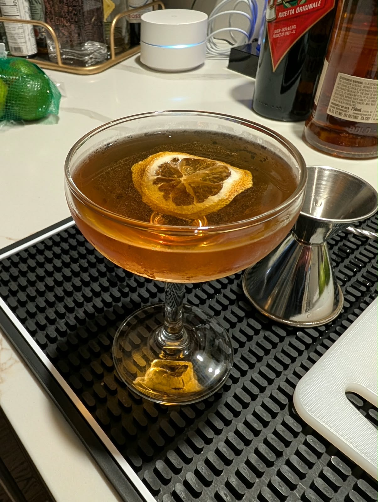

📸 Original Club Photo
Chilled coupe or Nick & Nora glass
HOST: DOUG · ALLEY 2.6
STIRRED & STRAINED
The Alley Cocktail
"Durham sophistication, now available in Cary." A structured, savory-bittersweet bourbon coupe built on 101-proof Wild Turkey, bone-dry vermouth, Cynar, and a whisper of Luxardo Maraschino, tied together by celery bitters.
PROFILE:
101 Bourbon Backbone
Herbal Artichoke
Savory Celery
Dry & Silky
ELEMENTS IN THE GLASS
- Wild Turkey 101 Bourbon
- Dry Vermouth
- Cynar
- Luxardo Maraschino Liqueur
- Celery Bitters
- Garnish: Dehydrated Lemon Slice